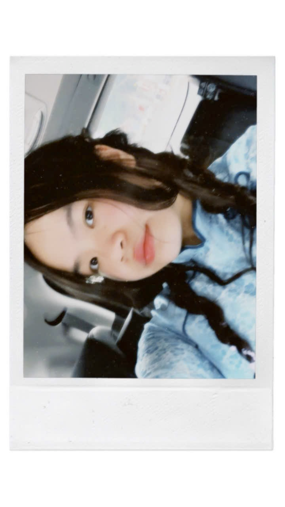
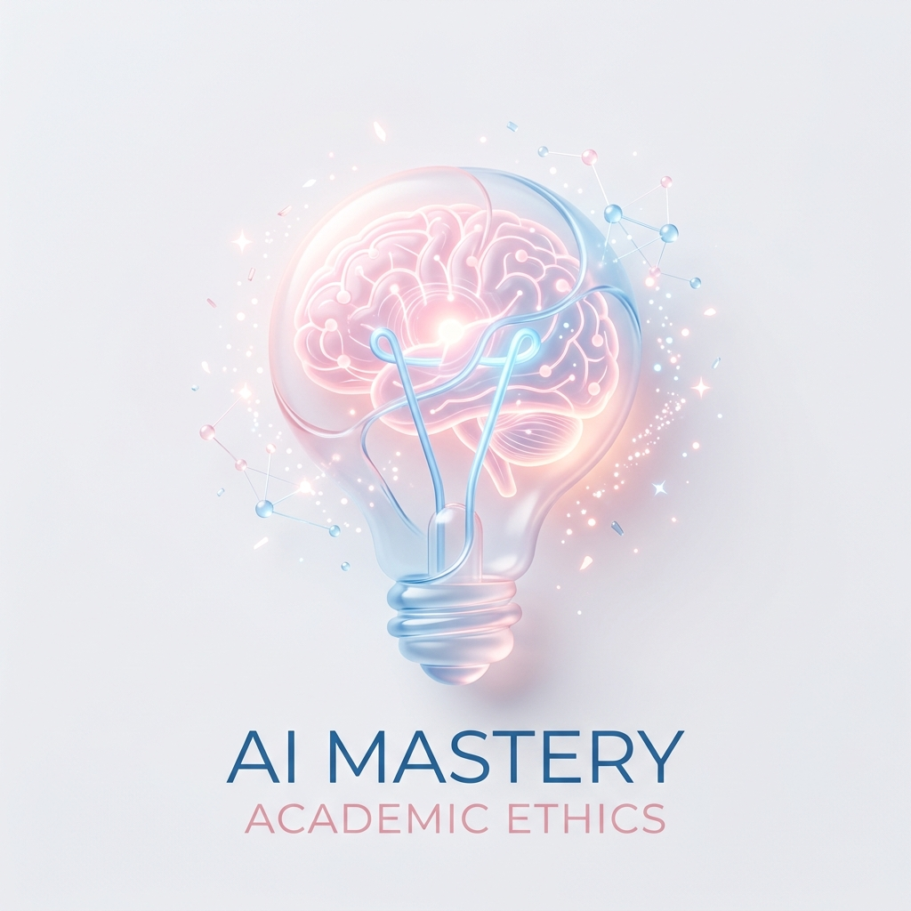

Dương Tường Anh
Chào mừng bạn đến với Digital Portfolio của mình! Đây là nơi mình lưu trữ toàn bộ các sản phẩm thực hành dự án cá nhân được thiết kế nhằm tổng hợp và thể hiện kiến thức, kỹ năng số đã học được từ môn "Nhập môn Công nghệ số và Ứng dụng Trí tuệ nhân tạo". Danh mục này không chỉ là một tập tài liệu lưu trữ mà còn là minh chứng cho quá trình phát triển tư duy làm chủ công nghệ của bản thân.

Bài 1: Thao tác cơ bản với tệp tin và thư mục
1. Quy tắc đặt tên gọn gàng
Để máy tính luôn được sắp xếp một cách gọn gàng và không bao giờ lo bị mất hoặc không tìm thấy file, mình đã áp dụng các quy tắc đặt tên bài bản như sau:
- Sử dụng PascalCase và Underscore: Thư mục gốc được đặt tên là
ThucHanh_DuongTuongAnhsẽ giúp việc định danh sinh viên trở nên rõ ràng hơn trên hệ thống. - Tính mô tả cao: Đổi tên tệp nháp từ
GhiChu.txtthànhGhiChuQuanTrong.txtđể thể hiện rõ mức độ ưu tiên. Tệp cần luân chuyển được gọi làDiChuyen.txt. - Viết tiếng Việt không dấu: Hạn chế tối đa khoảng trắng và các ký tự đặc biệt nhằm đảm bảo tương thích mượt mà trên mọi hệ điều hành.
2. Quy trình 12 bước thực hành tiêu chuẩn
Nhấp vào các nút bên dưới để xem chi tiết cách mình thực hiện từng bước trong quy trình 12 bước thực hành tiêu chuẩn:
Bước 1: Mở File Explorer nhanh
Mình mở trình quản lý file bằng tổ hợp phím tắt nhanh Windows + E hoặc bấm trực tiếp vào biểu tượng thư mục màu vàng quen thuộc trên thanh Taskbar.
3. Trình duyệt Thư mục & Tệp tin tương tác
Dưới đây là bản báo cáo và các bước thực hiện được mình sắp xếp theo từng bước đầy đủ. Bạn có thể tương tác trực tiếp bằng cách bấm vào các tệp để xem giả lập hoặc click nút thao tác nhanh:
4. Tóm tắt phân loại kỹ thuật tệp tin
Tệp GhiChuQuanTrong.txt được sao chép (Copy) vào thư mục TaiLieu để làm bản lưu dự phòng. Tệp DiChuyen.txt được chuyển hẳn (Cut) từ thư mục gốc bên ngoài vào thư mục con cho gọn gàng.
Sử dụng tổ hợp phím Shift + Delete để dọn dẹp triệt để tệp nháp dư thừa. Đồng thời, tớ cũng thực hiện khôi phục (Restore) thành công tệp quan trọng từ Recycle Bin (Thùng rác).
5. Ý nghĩa thực tiễn đối với Biên - Phiên dịch viên
Đối với một biên dịch viên tương lai, việc làm chủ kỹ năng quản lý tệp tin không chỉ giúp máy tính gọn gàng mà là yếu tố sống còn để quản lý dự án dịch thuật. Khi dịch một tài liệu, tớ phải quản lý rất nhiều định dạng tệp: tệp văn bản gốc, tệp dịch thô, bản hiệu đính (Proofread), các tệp bộ nhớ dịch thuật (.tmx) và cơ sở dữ liệu thuật ngữ (.tb). Việc tổ chức cấu trúc thư mục rõ ràng và chuẩn hóa đặt tên tệp giúp ngăn ngừa tuyệt đối lỗi gửi nhầm bản nháp cho khách hàng — một sai lầm bảo mật nghiêm trọng trong ngành dịch thuật chuyên nghiệp.
Bài 2: Tìm kiếm và đánh giá thông tin học thuật
Chủ đề nghiên cứu thực tế: "Tác động của Trí tuệ Nhân tạo (AI) đối với quá trình tự học và phát triển năng lực của sinh viên đại học".
1. Chiến lược tìm kiếm & Toán tử nâng cao (Từ Báo cáo thật)
Các cấu trúc thành phần toán tử tìm kiếm logic đa lớp mà tớ đã sử dụng trên trên Google Scholar:
- Lớp Công cụ (AI):
("Artificial Intelligence" OR "ChatGPT") - Lớp Môi trường (Higher Education):
("Higher Education" OR "University") - Lớp Tác vụ (Self-study):
("Self-study" OR "Academic development")
("Artificial Intelligence" OR "ChatGPT") AND ("Higher Education" OR "University") AND ("Self-study" OR "Academic development")
("인공지능" OR "AI") AND ("대학생" OR "대학교") AND ("자기주도학습" OR "학업 성취도")
- Toán tử Ngoặc kép (""): Khóa chặt cụm từ chuyên môn không cho phép AI tự động biến đổi hoặc bóc tách (Ví dụ:
"Artificial Intelligence"). - Toán tử OR: Mở rộng tối đa không gian tìm kiếm sang các từ đồng nghĩa để tránh sót các nghiên cứu quan trọng (Ví dụ:
"Higher Education" OR "University"). - Toán tử AND: Buộc tất cả các kết quả trả về phải chứa đầy đủ 3 giao điểm chủ đề: Công cụ (AI) ∩ Môi trường (Đại học) ∩ Tác vụ ứng dụng (Tự học).
2. Bảng Đánh giá học thuật các nguồn tài liệu
Lọc nhanh tài liệu tớ tìm được bằng các nút lọc bên dưới:
| Tài liệu / Tác giả | Thể loại | Cơ quan XB | Độ tin cậy | Đánh giá cốt lõi |
|---|---|---|---|---|
| Kim, H.R. (2020) Difficulties in translation of Korean literary texts |
Bài báo | Russian Linguistic Bulletin | 5.0 / 5 | Tạp chí học thuật quốc tế, phân tích sâu yếu tố văn hóa và ngôn ngữ, có phương pháp nghiên cứu rõ ràng. |
| Seo, J. & Kim, H. (2023) Human Interpretation and Machine Translation Errors |
Bài báo | Korean Journal of English Linguistics | 5.0 / 5 | Nghiên cứu thực nghiệm, so sánh dịch máy và con người, dữ liệu cụ thể, tính ứng dụng cao. |
| Lee, H. & Nam, W.J. (2018) The past and future of translation studies in South Korea |
Bài báo | Perspectives | 4.5 / 5 | Bài tổng quan học thuật uy tín, phân tích xu hướng ngành, nhưng thiên về lý thuyết hơn thực nghiệm. |
| Cho, S.E. (2006) Translator’s creativity in Japanese-Korean translation |
Bài báo | Meta Journal | 4.5 / 5 | Tạp chí dịch thuật hàng đầu, nội dung có giá trị lý thuyết cao, nhưng nghiên cứu đã cũ. |
| Eo, S. et al. (2022) QUAK: A dataset for Korean-English MT quality estimation |
Bài báo | arXiv | 4.0 / 5 | Nghiên cứu mới về AI, có dữ liệu và phương pháp rõ ràng, nhưng chưa qua phản biện chính thức. |
| Lee, D. et al. (2025) Beyond word-for-word translation in English-Korean pairs |
Bài báo | arXiv | 4.0 / 5 | Nghiên cứu rất cập nhật về LLM, có đánh giá con người, nhưng độ tin cậy bị hạn chế do chưa peer-review. |
| Pak, M.C. (2015) Phrase database approach in English-Korean MT |
Bài báo | arXiv | 3.5 / 5 | Nghiên cứu nền tảng về dịch máy, nhưng đã cũ và công nghệ không còn mới. |
| Kang, J.H. & Wakabayashi, J. (2019) Translating and Interpreting in Korean Contexts |
Sách | Routledge | 5.0 / 5 | Nhà xuất bản quốc tế uy tín, nội dung hệ thống, được dùng rộng rãi trong nghiên cứu dịch thuật. |
| Kim, W.D. (2019) Translations in Korea: Theory and Practice |
Sách | Springer | 5.0 / 5 | Sách học thuật chất lượng cao, có thẩm định khoa học, nội dung toàn diện về dịch thuật Hàn Quốc. |
| earticle (2023) Error analysis in Korean-Chinese interpretation using AI |
Bài báo | earticle (CSDL Hàn Quốc) | 4.0 / 5 | Có dữ liệu thực nghiệm, phản ánh thực tiễn, nhưng độ uy tín phụ thuộc từng tạp chí cụ thể. |
3. Phân tích chiều sâu về các nguồn tài liệu
Việc nhận diện ưu - nhược điểm của từng nhóm nguồn tài liệu giúp mình chắt lọc thông tin khách quan hơn:
- Tạp chí Khoa học:
Ưu điểm: Độ uy tín và khoa học rất cao nhờ quy trình phản biện nghiêm ngặt của giới chuyên môn, minh bạch về phương pháp nghiên cứu (như mô hình định lượng TAM, CFA).
Hạn chế: Kiến thức thiên về học thuật lý thuyết vĩ mô, cần thêm quá trình lập trình thực tế để ứng dụng vào hệ thống thực tiễn. - Sách chuyên ngành:
Ưu điểm: Cung cấp khung kiến thức hệ thống vững chắc, các mô hình thiết kế phần mềm được nghiên cứu bài bản, chuyên sâu.
Hạn chế: Chu kỳ biên soạn và xuất bản sách khá dài nên tính cập nhật về các công nghệ lập trình hay thuật toán AI mới thường chậm hơn. - Nguồn tài liệu mở & Pháp quy:
Ưu điểm: Sơ đồ hoạt động thực tế, phản ánh kịp thời xu hướng công nghệ số hóa phần mềm mới nhất, có định hướng pháp lý rõ ràng.
Hạn chế: Chất lượng thông tin không đồng đều, dễ lẫn các bài viết quảng cáo hoặc giới thiệu công cụ phần mềm chưa được kiểm định kỹ.
Bài 3: Viết Prompt hiệu quả cho các tác vụ học tập
Ứng dụng Prompt Engineering nâng cao để giải quyết 3 tác vụ học tập trọng điểm: Tóm tắt tài liệu, Giải thích khái niệm và Thiết lập bộ câu hỏi ôn tập.
Tác vụ 1: Tóm tắt bài nghiên cứu
Tác vụ 2: Giải thích khái niệm
Tác vụ 3: Tạo câu hỏi ôn tập
4. Bảng so sánh hiệu quả của các PROMPT
| Tiêu Chí | Prompt Cơ Bản | Prompt Nâng Cao |
|---|---|---|
| Độ Sâu Nội Dung | Hời hợt, dễ bỏ sót số liệu và phương pháp luận quan trọng. | Phân tích hệ thống, nổi bật các số liệu trọng yếu và hạn chế rủi ro. |
| Độ Tương Tác | Cung cấp thông tin một chiều, đôi khi gây quá tải thuật ngữ. | Tạo đối thoại hai chiều, liên tục kiểm tra mức độ hiểu của người dùng. |
| Tính Chính Xác | Nguy cơ "ảo giác" (bịa đặt thông tin) rất cao. | Độ tin cậy cao, AI tự động từ chối nếu thiếu dữ kiện đầu vào. |
| Kiểm Tra Nhận Thức | Chỉ tạo ra câu hỏi học vẹt, phương án nhiễu quá dễ đoán. | Phân bổ câu hỏi đa dạng (thang Bloom), đáp án nhiễu đánh lừa tốt. |
5. Nguyên tắc cốt lõi và Ranh giới An toàn
Bên cạnh khu vực C.R.E.A.T.E, mình luôn chú trọng thiết lập ranh giới an toàn để quản lý rủi ro sai lệch thông tin của AI:
- Rõ ràng & Đặc tả: Không để lại điểm tối nghĩa. Yêu cầu rõ định dạng, độ dài và giọng văn mong muốn.
- Tư duy theo bước (Chain-of-Thought): Thay vì bắt AI làm một nhiệm vụ lớn ngay lập tức, hãy hướng dẫn chia nhỏ thành các bước suy luận logic rõ ràng.
- Thiết lập ranh giới an toàn: Luôn chèn lệnh phòng ngừa ảo giác: "Nếu không có thông tin học thuật xác thực, hãy trả lời là tôi không biết, tuyệt đối không bịa đặt."
Bài 4: Hợp tác trực tuyến trong dự án nhóm
Dự án nhóm thực hành: "Ứng dụng AI trong học ngoại ngữ".
Vai trò cá nhân: Quản lý tiến độ, tổ chức lưu trữ và biên tập tài liệu.
1. Thiết lập hệ sinh thái công cụ quản lý dự án nhóm
Trong học phần Nhập môn Công nghệ số, nhóm chúng mình đã triển khai làm bài tập đánh giá giữa kỳ. Dự án diễn ra trong gói gọn 01 tuần với các giai đoạn: thiết lập bảng kế hoạch phân công công việc, thu thập dữ liệu, phân tích số liệu, viết nội dung và hoàn thiện sản phẩm thuyết trình.
Lịch trình tiến độ dự án nhóm (01 Tuần)
Microsoft Teams
Hệ thống quản lý tác vụ (Task Management) và giao tiếp bất đồng bộ chính thức.
Google Meet
Hệ thống hội thoại trực tuyến đồng bộ, phục vụ họp nhóm, brainstorm ý tưởng và nghiệm thu tiến độ theo thời gian thực.
Zalo Cloud & Docs
Hệ thống lưu trữ, phân loại nhanh và chia sẻ tài nguyên dự án trực tiếp của cả đội.
2. Tích hợp tính năng nâng cao và Tối ưu hóa quy trình
- Định danh chuyên nghiệp: Đồng bộ ảnh đại diện và đặt tên hiển thị dạng
[Họ tên] - [MSV]trên Teams, Google Docs và Zalo nhằm tối ưu hóa việc theo vết tương tác. - Cấu hình Microsoft Teams: Chia nhỏ thành 3 kênh chuyên trách (Phân việc, Nội dung, Tổng kết); sử dụng thẻ màu (Đỏ/Vàng/Xanh) để phân loại độ khẩn cấp và dùng
@tagđể điều phối thông tin nhanh. - Tối ưu hóa Zalo: Ghim các liên kết quan trọng, phân loại tài liệu bằng thẻ màu (như "Dự án ULIS") và nhúng trực tiếp link Google Docs vào mô tả nhóm để cả đội truy cập nhanh.
3. Đề xuất giải pháp cho các thách thức phối hợp nhóm
Khi làm việc nhóm không tránh khỏi những lúc bất đồng ý kiến hoặc gặp xung đột, nhóm mình đã khắc phục bằng các giải pháp số:
Thách thức: Khác biệt lịch học cá nhân khiến việc duyệt khung đề cương giữa các thành viên bị trễ 5–6 tiếng, làm gián đoạn tiến trình viết bài cá nhân.
Giải pháp công nghệ: Áp dụng Quy tắc phản hồi thông tin (SLA nội bộ): Các đầu việc khẩn cấp (High Priority) cần được tag và phản hồi trong vòng 6 tiếng ban ngày; nếu quá hạn, chủ động gọi điện trực tiếp qua Microsoft Teams để giải quyết ngay.
Thách thức: Thông báo dồn dập từ Zalo và Teams gây phân tâm trong giờ tự học cá nhân, dễ làm bỏ sót các lưu ý quan trọng của nhóm trưởng.
Giải pháp công nghệ: Cấu hình bộ lọc thông báo thông minh: Ẩn/tắt chuông thông báo ở các kênh phụ không liên quan trên Teams, kết hợp bật chế độ phân loại tin nhắn ưu tiên (Ghim) trên Zalo để tập trung tối đa.
Thách thức: Luồng chat thảo luận bị lẫn lộn giữa tin nhắn trao đổi chung và việc gửi file, khiến tài liệu học tập trôi nhanh và cực kỳ mất thời gian tìm kiếm lại.
Giải pháp công nghệ: Tối ưu hóa kho lưu trữ đám mây: Định kỳ cuối ngày nhóm trưởng thu gom toàn bộ file về Google Drive dùng chung, phân loại bằng "Thẻ File" của nhóm Zalo, kết hợp tính năng Ghim các liên kết quan trọng để cả đội dễ dàng truy cập.
Thách thức: Khi cùng dịch báo cáo, mỗi thành viên dùng các từ ngữ dịch khác nhau cho một thuật ngữ chuyên ngành (Ví dụ: người dịch "Self-study" thành "Tự học", người dịch thành "Tự nghiên cứu", người dịch thành "Tự đào tạo"), dẫn đến bài dịch tổng hợp bị chắp vá và thiếu nhất quán.
Giải pháp công nghệ: Đồng bộ thuật ngữ đám mây: Nhóm thiết lập một bảng Glossary (Thuật ngữ chung) dùng chung trên Google Sheets. Trước khi viết, cả nhóm thống nhất định nghĩa các từ khóa cốt lõi tại đây; trong quá trình viết, mọi người đối chiếu trực tiếp thời gian thực để đảm bảo toàn bộ tài liệu dịch thuật đồng nhất 100% văn phong.
Bài 5: Sử dụng AI tạo sinh để hỗ trợ sáng tạo nội dung
Chiến dịch nội dung đa phương tiện: "AI và Tương lai Giáo dục Đại học: Cơ hội hay Thách thức cho Sinh viên VNU?".
1. Quy trình ứng dụng AI tạo sinh và Tích hợp sáng tạo
Quá trình phối hợp công cụ AI và vai trò của con người trong từng công đoạn được ghi nhận trực quan qua các bước tương tác sau:
Prompt: "Bạn là một chuyên gia thiết kế nội dung số. Hãy lập đề cương cho một Infographic có tên 'Roadmap làm chủ AI cho sinh viên VNU'. Nội dung gồm 4 bước: 1. Hiểu bản chất, 2. Thực hành Prompt, 3. Ứng dụng chuyên ngành, 4. Đạo đức học thuật. Viết ngắn gọn, súc tích kiểu bullet points."
Tinh chỉnh thực tế (Tường Anh): Bản địa hóa bằng cách đưa thêm các ví dụ thực tiễn về hoạt động nghiên cứu khoa học (NCKH), làm tiểu luận và tuân thủ quy chế liêm chính học thuật tại VNU.
Prompt: Tạo ảnh minh họa chính thể hiện một sinh viên VNU đang học tập trong không gian hiện đại với các yếu tố trực quan hóa dữ liệu AI.
Tinh chỉnh thực tế (Tường Anh): AI đóng vai trò xuất ra hình ảnh thô. Sử dụng Canva để tách nền, phối hợp cùng các icon phẳng (Flat Design) và logo VNU để tạo sự đồng nhất.
Sử dụng tính năng Canva Magic Media để tự động gợi ý và phối bộ màu sắc (Color Palette) hiện đại mang phong cách công nghệ: Xanh Navy - Bạc - Xanh Mint. Đồng thời dùng Magic Switch để chuyển đổi nhanh tài liệu thô dạng văn bản sang các khối nội dung đồ họa tự động trên khung slide.
Hiệu chỉnh thủ công (Human-in-the-loop): Do hệ thống AI thường bị lỗi font tiếng Việt hiển thị, tớ đã thay thế toàn bộ font lỗi bằng font Montserrat chỉn chu, đồng thời căn lề và tái cấu trúc lại các khối chữ bị quá dày để tối ưu tính trực quan.
2. So sánh và Phân tích hiệu quả công cụ AI
| Tiêu chí | AI Text (Google Gemini) | AI Image (DALL-E 3) | Canva (Thiết kế & Bố cục) |
|---|---|---|---|
| Điểm mạnh | Cập nhật dữ liệu thời gian thực cực tốt. Hiểu rõ ngữ cảnh địa phương và các thông tin liên quan đến VNU. Tốc độ sinh dàn ý nhanh. | Trực quan hóa ý tưởng xuất sắc. Tạo ra hình ảnh minh họa độc quyền, sắc nét và mang đậm tính nghệ thuật tương lai. | Cầu nối xuất sắc giúp hiện thực hóa layout. Phối màu nhanh chóng. Tự động dàn trang từ văn bản thô cực tiện lợi. |
| Điểm yếu | Hành văn đôi khi còn mang tính liệt kê, thiếu cảm xúc cá nhân. Dễ gặp lỗi "ảo giác AI" (bịa số liệu khảo sát học thuật). | Gặp khó khăn khi xử lý chữ văn bản trực tiếp trên ảnh. Nhân vật và bối cảnh thường bị thiếu đi nét Việt. | Các template tự động dễ bị rập khuôn, máy móc. Thường xuyên xảy ra lỗi font chữ tiếng Việt (lỗi hiển thị dấu). |
| Đóng góp (Tường Anh) | Đảm bảo liêm chính học thuật: Mình đọc lại và chỉnh sửa lời văn, nội dung theo ý tưởng và phong cách của mình. Viết lại các bước bám sát quy chế VNU. | Định hướng prompt nghệ thuật. Đưa ảnh thô vào Canva để tách nền, xử lý hậu kỳ và phối hợp cùng các icon vector phẳng (Flat Design) để đồng nhất. | Sửa lỗi font chữ thủ công hoàn toàn sang font Montserrat. Cắt giảm bớt text thừa, tái cấu trúc bố cục và chèn logo VNU để tăng nhận diện. |
3. Sản phẩm sáng tạo cuối cùng của tớ
Bài 6: Sử dụng AI có trách nhiệm trong học tập và nghiên cứu
Chủ đề: Đánh giá đạo đức học thuật và Thiết lập bộ nguyên tắc cá nhân.
1. Phản biện Chính sách và Ranh giới Liêm chính Học thuật tại VNU
Là sinh viên Trường Đại học Ngoại ngữ - ĐHQGHN, mình đã tìm hiểu kỹ chính sách sử dụng AI của trường như sau:
- Khuyến khích ứng dụng có kiểm soát và định hướng đạo đức rõ ràng.
- Yêu cầu trích dẫn rõ ràng tên AI và vai trò cụ thể của công cụ trong bài báo cáo học thuật.
- Nghiêm cấm lạm dụng AI để tạo ra toàn bộ hoặc phần lớn sản phẩm học thuật rồi nộp dưới danh nghĩa cá nhân.
Chính sách của VNU mang tính thực tiễn cao và rất linh hoạt. Thay vì cấm đoán một cách cực đoan – điều bất khả thi trong kỷ nguyên số, nhà trường đã lựa chọn giải pháp "định hướng và đồng hành". Quy định này vừa bảo vệ giá trị cốt lõi của giáo dục là tư duy độc lập, vừa giúp sinh viên VNU không bị tụt hậu về mặt năng lực công nghệ, sẵn sàng đáp ứng yêu cầu của thị trường lao động 4.0.
2. Quá trình tương tác kỹ thuật (Prompts & Outputs)
Để hiện thực hóa việc ứng dụng AI có trách nhiệm, tớ lựa chọn thực hiện một nhiệm vụ học tập cụ thể: "Tổng hợp tài liệu và lập dàn ý cho bài luận nghiên cứu: Tác động của công cụ dịch thuật AI đối với động lực học kỹ năng Viết của sinh viên ngành Ngôn ngữ Anh".
Prompt: "Bạn là một chuyên gia trong lĩnh vực giảng dạy tiếng Anh (TESOL). Hãy giúp tôi xây dựng một dàn ý chi tiết cho bài luận nghiên cứu dài 2.000 từ với đề tài: 'Tác động của công cụ dịch thuật AI đối với động lực học kỹ năng Viết của sinh viên ngành Ngôn ngữ Anh'. Dàn ý cần chuẩn cấu trúc học thuật gồm: Mở đầu, Nội dung chính (Thực trạng, Tác động tích cực, Thách thức tiêu cực), và Kết luận."
Đầu ra (Output) của AI: Cung cấp dàn ý gồm 3 chương logic: Chương 1 (Đặt vấn đề và Tổng quan tài liệu), Chương 2 (Phân tích đa chiều: Tiết kiệm thời gian vs. Nguy cơ lười tư duy, giảm vốn từ), Chương 3 (Đề xuất giải pháp kiểm soát) và Kết luận.
Prompt: "Dựa trên dàn ý trên, hãy gợi ý cho tôi 3 hướng luận điểm cốt lõi để phân tích sâu về việc sinh viên bị giảm sút động lực tự học viết khi quá phụ thuộc vào AI dịch thuật, và đề xuất cách cấu trúc các đoạn văn theo mô hình PEEL (Point, Explanation, Example, Link)."
Đầu ra (Output) của AI: Cung cấp 3 luận điểm: (1) Sự suy giảm tư duy ngôn ngữ độc lập, (2) Tâm lý ỷ lại vào công nghệ sửa lỗi tự động, (3) Hội chứng lười trau dồi ngữ pháp chuyên sâu; kèm theo khung xương PEEL chi tiết cho từng đoạn.
3. Bộ nguyên tắc cá nhân về sử dụng AI có trách nhiệm (5 Nguyên tắc vàng)
Nhằm định hình hành vi và giữ vững đạo đức học thuật của bản thân trong suốt quá trình học tập tại ULIS, mình tự đặt ra 5 nguyên tắc vàng cốt lõi:
- Tư duy là duy nhất, AI chỉ là trợ lý: Tư duy phản biện, lập luận và kết luận cuối cùng của bài viết luôn luôn phải xuất phát từ não bộ của bản thân. Không bao giờ để AI suy nghĩ thay.
- Thẩm định là bắt buộc (Quy tắc "Hoài nghi khoa học"): Tuyệt đối không tin tưởng 100% vào các số liệu hay trích dẫn do AI cung cấp. Mọi thông tin từ AI đều phải được đối chiếu, xác thực lại với các nguồn tài liệu chính thống (sách giáo khoa, bài báo Scopus/ISI) trước khi đưa vào bài.
- Minh bạch là đạo đức: Thành thật khai báo và trích dẫn đầy đủ việc sử dụng AI ở mọi cấp độ (từ dịch thuật, lên ý tưởng đến chỉnh sửa cấu trúc) theo đúng quy chuẩn học thuật APA.
- Nói không với "Copy - Paste" nguyên bản: Không bao giờ sao chép trực tiếp các đoạn văn dài do AI tạo ra để nộp bài. Mọi nội dung gợi ý từ AI phải được xử lý, diễn đạt lại bằng ngôn từ, văn phong và trải nghiệm cá nhân của bản thân.
- Nâng cao chứ không thay thế kỹ năng gốc: Chỉ sử dụng AI khi bản thân đã có nền tảng kiến thức cơ bản về vấn đề đó. Dùng AI làm công cụ để tối ưu hóa hiệu suất, mở rộng góc nhìn chứ không dùng AI để né tránh việc học tập và rèn luyện kỹ năng gốc của một sinh viên ngôn ngữ.
Trang Tổng kết Dự án
Quá trình thiết lập và hoàn thiện Digital Portfolio này đã mang lại cho mình những trải nghiệm thực tế vô cùng quý giá về việc kết hợp công nghệ thông tin và trí tuệ nhân tạo vào ngành học Ngôn ngữ và Văn hóa Hàn Quốc của mình.
Kiến thức tích lũy
Hiểu rõ cách tổ chức tệp tin khoa học, cách viết prompt thông minh và biết phương pháp phân loại, đánh giá mức độ tin cậy của các tài liệu nghiên cứu học thuật trên môi trường số.
Kỹ năng phát triển
Lần đầu tiên được tiếp cận quy trình xây dựng và chạy một trang web thực tế, hiểu cách hoạt động của Git/GitHub và cách tối ưu hóa trải nghiệm tương tác của người dùng trên web.

Mặt tâm đắc nhất
Biết cách làm chủ AI như một người trợ lý đắc lực hỗ trợ dịch thuật tiếng Hàn, thiết kế ấn phẩm đồ họa sáng tạo nhưng vẫn giữ vững tinh thần đạo đức và liêm chính học thuật.
Định hướng tương lai
Trong tương lai, mình sẽ tiếp tục cập nhật trang Portfolio này để biến nó thành một hồ sơ năng lực (CV trực tuyến) chuyên nghiệp. Mình tin rằng sự kết hợp giữa kiến thức chuyên môn về Ngôn ngữ Hàn Quốc và tư duy làm chủ công nghệ số sẽ là một lợi thế cạnh tranh rất lớn giúp mình phát triển xa hơn trong sự nghiệp biên - phiên dịch và truyền thông số.
Liên hệ với Tường Anh
Nếu bạn có câu hỏi hoặc muốn trao đổi về dự án, hãy để lại thông tin theo biểu mẫu bên dưới hoặc gửi mail trực tiếp nhé!